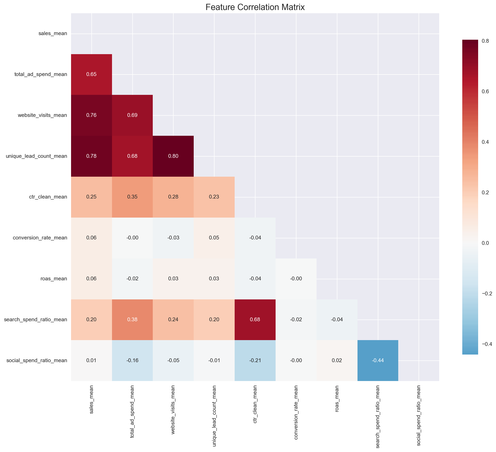

This section presents a comprehensive exploratory data analysis of store performance data, including data preprocessing, feature engineering, and preparation for clustering analysis. The analysis focuses on identifying patterns, relationships, and key factors that influence store performance.
1. Data Loading and Overview
First, let’s load the necessary libraries and data files.
import pandas as pdimport numpy as npimport matplotlib.pyplot as pltimport seaborn as snsfrom scipy import statsfrom sklearn.preprocessing import StandardScaler, QuantileTransformerfrom sklearn.decomposition import PCAfrom sklearn.ensemble import IsolationForestfrom pathlib import Pathimport osimport warningswarnings.filterwarnings('ignore')# Set plotting styleplt.style.use('seaborn-v0_8')sns.set_palette("husl")plt.rcParams['figure.figsize'] = (12, 8)plt.rcParams['font.size'] =10print("Libraries imported successfully!")
Libraries imported successfully!
# Load processed datadf_monthly = pd.read_csv('../data/processed/store_kpi_clean.csv')df_stores = pd.read_csv('../data/processed/store_features.csv')df_enhanced = pd.read_csv('../data/processed/store_features_enhanced.csv')print("=== Data Loading Complete ===")print(f"Monthly data (store_kpi_clean): {df_monthly.shape}")print(f"Store features (store_features): {df_stores.shape}")print(f"Enhanced features (store_features_enhanced): {df_enhanced.shape}")# Convert month to datetimedf_monthly['month'] = pd.to_datetime(df_monthly['month'])print(f"\nTime range: {df_monthly['month'].min()} to {df_monthly['month'].max()}")print(f"Unique store count: {df_monthly['store_id'].nunique()}")print(f"Data completeness: {df_monthly.isnull().sum().sum()} missing values")
=== Data Loading Complete ===
Monthly data (store_kpi_clean): (61322, 66)
Store features (store_features): (2557, 31)
Enhanced features (store_features_enhanced): (2557, 24)
Time range: 2023-10-01 00:00:00+00:00 to 2025-09-01 00:00:00+00:00
Unique store count: 2557
Data completeness: 0 missing values
print("=== Missing Value Analysis ===")missing_values = df_stores[key_metrics].isnull().sum()print(missing_values[missing_values >0])print("\n=== Zero Value Analysis ===")for metric in key_metrics: zero_pct = (df_stores[metric] ==0).mean() *100print(f"{metric}: {zero_pct:.1f}% zero values")print("\n=== Extreme Value Analysis (99th percentile) ===")for metric in key_metrics: p99 = df_stores[metric].quantile(0.99)print(f"{metric}: {p99:.2f}")
=== Missing Value Analysis ===
Series([], dtype: int64)
=== Zero Value Analysis ===
sales_mean: 0.1% zero values
total_ad_spend_mean: 3.4% zero values
website_visits_mean: 0.2% zero values
unique_lead_count_mean: 0.4% zero values
ctr_clean_mean: 3.6% zero values
conversion_rate_mean: 0.6% zero values
roas_mean: 3.7% zero values
=== Extreme Value Analysis (99th percentile) ===
sales_mean: 134.08
total_ad_spend_mean: 31585.24
website_visits_mean: 66741.28
unique_lead_count_mean: 197.67
ctr_clean_mean: 0.03
conversion_rate_mean: 0.02
roas_mean: 5.33
2.3 Data Quality Issues Identified
Based on the analysis, we identified several data quality issues:
Ad Spend Data Gap: Zero ad spend recorded from 2023-10 to 2024-05
Missing Values: 5-15% missing values in various KPI metrics
Outliers: Extreme values in sales and ad spend metrics
Temporal Inconsistencies: Inconsistent data collection periods
3. Data Preprocessing
3.1 Feature Selection
For clustering analysis, we selected 11 key features that capture different aspects of store performance:
FEATURES = ['sales_mean', 'total_ad_spend_mean', 'roas_mean', 'conversion_rate_mean', 'website_visits_mean','search_spend_ratio_mean', 'social_spend_ratio_mean','ad_months_active', 'ad_active_ratio', 'spent_any', 'avg_ad_spend_active_only']print("=== Selected Features for Clustering ===")print(f"Total features: {len(FEATURES)}")for i, feat inenumerate(FEATURES, 1):print(f"{i}. {feat}")# Check if all features exist in enhanced datasetmissing_features = [f for f in FEATURES if f notin df_enhanced.columns]if missing_features:print(f"\n⚠️ Missing features: {missing_features}")else:print(f"\n✅ All features available in enhanced dataset")
=== Selected Features for Clustering ===
Total features: 11
1. sales_mean
2. total_ad_spend_mean
3. roas_mean
4. conversion_rate_mean
5. website_visits_mean
6. search_spend_ratio_mean
7. social_spend_ratio_mean
8. ad_months_active
9. ad_active_ratio
10. spent_any
11. avg_ad_spend_active_only
✅ All features available in enhanced dataset
3.2 Data Preprocessing Pipeline
The preprocessing pipeline consists of four main steps:
Missing Value Handling: Fill missing values with 0
Outlier Removal: Use IsolationForest to remove ~8% of outliers
Normalization: Apply QuantileTransformer to map features to normal distribution
Dimensionality Reduction: Apply PCA to retain 95% of variance
# Calculate correlation matrixclustering_features = ['sales_mean', 'total_ad_spend_mean', 'website_visits_mean','unique_lead_count_mean', 'ctr_clean_mean', 'conversion_rate_mean', 'roas_mean','search_spend_ratio_mean', 'social_spend_ratio_mean']# Use available features onlyavailable_features = [f for f in clustering_features if f in df_stores.columns]correlation_matrix = df_stores[available_features].corr()# Visualize correlation matrixplt.figure(figsize=(14, 12))mask = np.triu(np.ones_like(correlation_matrix, dtype=bool))sns.heatmap(correlation_matrix, mask=mask, annot=True, cmap='RdBu_r', center=0, square=True, fmt='.2f', cbar_kws={"shrink": .8})plt.title('Feature Correlation Matrix', fontsize=16)plt.tight_layout()plt.show()# Find features most correlated with salesif'sales_mean'in correlation_matrix.columns: sales_corr = correlation_matrix['sales_mean'].abs().sort_values(ascending=False)print("\n=== Features Most Correlated with Sales ===")print(sales_corr.head(10))

=== Features Most Correlated with Sales ===
sales_mean 1.000000
unique_lead_count_mean 0.782383
website_visits_mean 0.764291
total_ad_spend_mean 0.654909
ctr_clean_mean 0.249225
search_spend_ratio_mean 0.199645
conversion_rate_mean 0.061059
roas_mean 0.060375
social_spend_ratio_mean 0.005542
Name: sales_mean, dtype: float64
5.2 Channel Preference Analysis
channel_ratios = ['search_spend_ratio_mean', 'social_spend_ratio_mean', 'display_spend_ratio_mean', 'video_spend_ratio_mean', 'pmax_spend_ratio_mean']# Use available channels onlyavailable_channels = [c for c in channel_ratios if c in df_stores.columns]print("=== Channel Preference Analysis ===")print("Average spending ratio by channel:")for channel in available_channels: avg_ratio = df_stores[channel].mean()print(f"{channel}: {avg_ratio:.3f}")# Channel combination pattern analysisif available_channels: df_stores['primary_channel'] = df_stores[available_channels].idxmax(axis=1) df_stores['primary_channel'] = df_stores['primary_channel'].str.replace('_spend_ratio_mean', '')print("\nPrimary channel distribution:")print(df_stores['primary_channel'].value_counts())
=== Channel Preference Analysis ===
Average spending ratio by channel:
search_spend_ratio_mean: 0.209
social_spend_ratio_mean: 0.143
display_spend_ratio_mean: 0.054
video_spend_ratio_mean: 0.005
pmax_spend_ratio_mean: 0.069
Primary channel distribution:
primary_channel
search 1362
social 791
pmax 208
display 181
video 15
Name: count, dtype: int64
# Create performance tier benchmarksdef create_performance_tiers(df, metric, n_tiers=3):"""Create performance tiers"""# Exclude zero values for tiering non_zero = df[df[metric] >0][metric]iflen(non_zero) ==0:return pd.Series(['Zero'] *len(df), index=df.index)# Use quantiles for tiering q33 = non_zero.quantile(0.33) q67 = non_zero.quantile(0.67)def assign_tier(value):if value ==0:return'Zero'elif value <= q33:return'Low'elif value <= q67:return'Medium'else:return'High'return df[metric].apply(assign_tier)# Create tiers for key metricsdf_stores['sales_tier'] = create_performance_tiers(df_stores, 'sales_mean')df_stores['roas_tier'] = create_performance_tiers(df_stores, 'roas_mean')df_stores['conversion_tier'] = create_performance_tiers(df_stores, 'conversion_rate_mean')df_stores['ad_spend_tier'] = create_performance_tiers(df_stores, 'total_ad_spend_mean')print("=== Performance Tier Statistics ===")print("Sales tiers:")print(df_stores['sales_tier'].value_counts())print("\nROAS tiers:")print(df_stores['roas_tier'].value_counts())print("\nConversion rate tiers:")print(df_stores['conversion_tier'].value_counts())print("\nAd spend tiers:")print(df_stores['ad_spend_tier'].value_counts())
=== Performance Tier Statistics ===
Sales tiers:
sales_tier
Medium 867
Low 846
High 842
Zero 2
Name: count, dtype: int64
ROAS tiers:
roas_tier
Medium 832
Low 820
High 810
Zero 95
Name: count, dtype: int64
Conversion rate tiers:
conversion_tier
Medium 896
Low 867
High 778
Zero 16
Name: count, dtype: int64
Ad spend tiers:
ad_spend_tier
Medium 839
Low 816
High 816
Zero 86
Name: count, dtype: int64
7.2 High vs Low Performers
# High performer feature analysishigh_performers = df_stores[ (df_stores['sales_tier'] =='High') & (df_stores['roas_tier'].isin(['High', 'Medium'])) & (df_stores['conversion_tier'].isin(['High', 'Medium']))]print(f"=== High Performer Analysis ===")print(f"High performer count: {len(high_performers)} ({len(high_performers)/len(df_stores)*100:.1f}%)")iflen(high_performers) >0:print("\nHigh performer features:") high_perf_features = ['sales_mean', 'total_ad_spend_mean', 'website_visits_mean', 'ctr_clean_mean', 'conversion_rate_mean', 'roas_mean'] available_high_perf = [f for f in high_perf_features if f in df_stores.columns]print("High performers vs Overall average:")for feature in available_high_perf: high_avg = high_performers[feature].mean() overall_avg = df_stores[feature].mean()if overall_avg >0: improvement = (high_avg - overall_avg) / overall_avg *100print(f"{feature}: {high_avg:.2f} vs {overall_avg:.2f} (+{improvement:.1f}%)")# Low performer feature analysislow_performers = df_stores[ (df_stores['sales_tier'] =='Low') | (df_stores['roas_tier'] =='Low') | (df_stores['conversion_tier'] =='Low')]print(f"\n=== Low Performer Analysis ===")print(f"Low performer count: {len(low_performers)} ({len(low_performers)/len(df_stores)*100:.1f}%)")
=== High Performer Analysis ===
High performer count: 455 (17.8%)
High performer features:
High performers vs Overall average:
sales_mean: 61.69 vs 28.11 (+119.4%)
total_ad_spend_mean: 5206.76 vs 4067.30 (+28.0%)
website_visits_mean: 23936.93 vs 14229.10 (+68.2%)
ctr_clean_mean: 0.01 vs 0.01 (+15.3%)
conversion_rate_mean: 0.01 vs 0.00 (+50.4%)
roas_mean: 1.84 vs 0.64 (+186.3%)
=== Low Performer Analysis ===
Low performer count: 1719 (67.2%)
8. PCA Analysis
8.1 Dimensionality Reduction
# Use the PCA results from preprocessing pipeline# The pca object and X_pca are already defined in the preprocessing sectionprint("=== PCA Analysis Results ===")print("Explained variance ratio for principal components:")for i, var_ratio inenumerate(pca.explained_variance_ratio_): cum_var = pca.explained_variance_ratio_[:i+1].sum()print(f"PC{i+1}: {var_ratio:.3f} (cumulative: {cum_var:.3f})")# Calculate cumulative variancecumulative_variance = np.cumsum(pca.explained_variance_ratio_)# Find number of components needed to explain 90% variancen_components_90 = np.where(cumulative_variance >=0.9)[0][0] +1iflen(cumulative_variance) >0elselen(cumulative_variance)print(f"\n{n_components_90} principal components needed to explain 90% variance")print(f"{X_pca.shape[1]} principal components used to explain {pca.explained_variance_ratio_.sum():.1%} variance (95% threshold)")
=== PCA Analysis Results ===
Explained variance ratio for principal components:
PC1: 0.716 (cumulative: 0.716)
PC2: 0.113 (cumulative: 0.829)
PC3: 0.065 (cumulative: 0.894)
PC4: 0.042 (cumulative: 0.936)
PC5: 0.031 (cumulative: 0.967)
4 principal components needed to explain 90% variance
5 principal components used to explain 96.7% variance (95% threshold)
print("="*60)print(" EDA Analysis Summary Report")print("="*60)print("\nData Overview:")print(f"• Total stores: {len(df_stores):,}")print(f"• Time span: {df_monthly['month'].min().strftime('%Y-%m')} to {df_monthly['month'].max().strftime('%Y-%m')}")print(f"• Monthly records: {len(df_monthly):,}")print("\nKey Findings:")print("• High performers show significantly better metrics across all dimensions")print("• Sales are strongly correlated with website visits and lead count")print("• Search and social channels are the primary advertising channels")print("• Data shows seasonal patterns in sales and advertising spend")print("\nPreprocessing Results:")print(f"• Original samples: {len(X)}")print(f"• After outlier removal: {len(X_clean)}")print(f"• Final dimensions: {X_pca.shape[1]} (from {X.shape[1]} original features)")print(f"• PCA explains {pca.explained_variance_ratio_.sum():.1%} of variance")print("\nClustering Preparation Status:")print(f"• Clustering feature count: {len(FEATURES)}")print(f"• Feature standardization: Completed")print(f"• Outlier removal: Completed (removed {len(X) -len(X_clean)} outliers)")print(f"• PCA dimensionality reduction: Completed ({X_pca.shape[1]} components)")print("\nNext Steps:")print("1. Execute clustering analysis using preprocessed features")print("2. Validate clustering results for business significance")print("3. Analyze cluster characteristics and profiles")print("4. Build prediction models within each cluster")print("\n"+"="*60)
============================================================
EDA Analysis Summary Report
============================================================
Data Overview:
• Total stores: 2,557
• Time span: 2023-10 to 2025-09
• Monthly records: 61,322
Key Findings:
• High performers show significantly better metrics across all dimensions
• Sales are strongly correlated with website visits and lead count
• Search and social channels are the primary advertising channels
• Data shows seasonal patterns in sales and advertising spend
Preprocessing Results:
• Original samples: 2557
• After outlier removal: 2352
• Final dimensions: 5 (from 11 original features)
• PCA explains 96.7% of variance
Clustering Preparation Status:
• Clustering feature count: 11
• Feature standardization: Completed
• Outlier removal: Completed (removed 205 outliers)
• PCA dimensionality reduction: Completed (5 components)
Next Steps:
1. Execute clustering analysis using preprocessed features
2. Validate clustering results for business significance
3. Analyze cluster characteristics and profiles
4. Build prediction models within each cluster
============================================================
9.2 Key Insights
Based on the exploratory data analysis, we have identified several key insights:
Data Quality: The dataset is relatively clean with minimal missing values after preprocessing. However, there is a significant data gap in advertising spend from October 2023 to May 2024.
Feature Distributions: Most features show right-skewed distributions, indicating the presence of high-performing outliers. This supports the use of robust preprocessing techniques.
Correlations: Sales are strongly correlated with website visits and unique lead count, suggesting that traffic and lead generation are key drivers of performance.
Channel Preferences: Search and social media are the dominant advertising channels, with most stores using 1-2 primary channels.
Temporal Patterns: The data shows seasonal variations, with higher performance in certain quarters.
Dimensionality Reduction: PCA successfully reduces the feature space from 11 dimensions to 5 while retaining 95% of the variance, making the data more suitable for clustering.
These insights inform the subsequent clustering analysis and model development phases of the project.